중립 KPI
12선택되지 않은 수치는 잉크색으로 유지합니다.
DESIGN SYSTEM FOUNDATION · STATIC SHOWCASE
모든 예시는 720pt × 405pt 고정 프레임이며, 실제 슬라이드가 아닌 재사용 가능한 구조와 상태 변형을 검증합니다.
FOUNDATION 01 · 기본 해부
중립 KPI
12선택되지 않은 수치는 잉크색으로 유지합니다.
읽기 순서
주제명이 아니라 회의에서 남길 결론 문장을 먼저 읽습니다.
유일한 파랑 목표
1한 슬라이드에서 의사결정 핵심 하나만 강조합니다.
FOUNDATION 02 · 근거 모듈 상태
확인됨
근거가 직접 확인한 사실만 짧게 기록합니다.
알 수 없음
미확인은 부재가 아니라 추가 확인이 필요한 상태입니다.
통과 조건
명시한 증거를 충족하기 전에는 권한을 열지 않습니다.
FOUNDATION 03 · 결정과 해석 경계
출시 권한
승객·캠퍼스·제한 pilot 권한은 열지 않습니다.
검증 프로그램
각 Gate의 증거를 충족한 뒤 다음 실행 권한을 별도로 엽니다.
FOUNDATION 04 · 근거 ledger
라벨이 의미를 전달하고, 파랑 선은 선택된 결론을 보조합니다.
| 상태 | 현재 근거 | 읽는 방법 |
|---|---|---|
| 확인됨 | 소프트웨어 RC 경로 | 검사 범위 안 |
| 알 수 없음 | 저장소 밖 구동부 동작 | 부재로 단정하지 않음 |
| 통과 조건 | actuator까지 단일 권한과 정지 측정 | 다음 Gate의 증거 |
FOUNDATION 05 · 권한 chain

읽기 요약: 최종 actuator까지 같은 서명·해시·정지 근거로 연결해야 합니다.
FOUNDATION 06 · Gate 0–5

Gate 0–3 프로그램 범위 승인 · Gate 3 실행 권한은 Gate 1–2 증거 통과 뒤 별도 결정
범위 bracket은 프로그램 계획을 뜻하며, 뒤 Gate의 실행 권한을 미리 열지 않습니다.